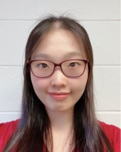

Meet the Team
Zhongyue (John) Yang
Project Director
I am an Assistant Professor of Chemistry and also affiliated to the Data Science Institute. My group and I are actively exploring tremendous opportunities in the interface between computational chemical biology and data science. Born in Tianjin, China, I graduated from Nankai University with a B.S. degree in Chemistry (Po-Ling class) in 2013. I received my Ph.D. with Prof. K. N. Houk in the Department of Chemistry at the University of California, Los Angeles in 2017. During my graduate career, we developed computational tools to simulate single-molecule reaction trajectories in solvent and in enzyme, which enables the elucidation of time-resolved mechanisms of biomolecular transformations in the condensed environment. From 2018 to 2020, I was a postdoctoral scholar in the group of Prof. Heather J. Kulik in the Department of Chemical Engineering at Massachusetts Institute of Technology. During this time, we leveraged large-scale quantum mechanics computation and molecular dynamics simulations to quantify constrained-peptide switch, understand the catalytic origins of methyltransferases, and predict the catalytic actions of glycyl radical enzymes in human gut microbiota. For more info, please visit my Personal Website
Sarah Torrence
Master Student, Data Science Institute
I am a current graduate student at Vanderbilt pursuing an MS in Data Science. I graduated from Denison University in 2016 with a degree in Mathematics and minor in Economics. Over the last five years, I’ve had the opportunity to grow as a data science professional in various fields and industries including education, criminology, financial services, and digital advertising. I am inspired by the way we can apply analytics and creativity to the data of our past to gain insights and create a better future.
Contact: Email

Bailu (Lucy) Yan
Research Assistant, Department of Chemistry, Vanderbilt University
Ph.D. Student, School of Medicine, Vanderbilt University
As the data science lead in the team, I’m responsible for database construction and statistical modeling and providing data-driven guidance to our researches. Graduated from Southern Methodist University with a Master’s degree in Applied Statistics and Data Analytics, I worked as a data analyst in industry for 2 years, focusing on data science and data engineering. After working with Prof. Yang, I’m amazed by how data-driven methods can contribute to biomolecular scientific research. We are excited to see the bright future of incorporating statistical and data-driven methods to enzyme study, which will open doors for enzyme designing with interdisciplinary research advancement.
Contact: Email
Xinchun Ran
Ph.D. student, Department of Chemistry
I am currently a Ph.D. student focusing on enzyme function prediction. Previously, I was working on the protein tertiary strcuctures prediction algorithm development at Chinese Academy of Sciences (CAS) and particpating in CASP14 2020 (Critical Assessment of Protein Structure Prediction). Witnessing the highly accurate result of the tertiary structure prediction, I am now focusing on bio-molecular structure-related downstream task such as reactive enzyme-substrate complexes evaluation, Free energy prediction, enzyme mutants selection. The algorithms develop for these tasks are expected to serve protein designing/engineering.
Contact: Email

Li Yuan
Master Student, Data Science Institute
I’m a 2nd Master student majoring in Data Science. I finished my bachelor degree of Statistics in China. After that I went to UC Berkeley for one-year exchange program. My current research interests are Statistics Machine Learning, Convolutional Neural Networks for images and Recurrent Neural Network for natural language processing.
Contact: Email
Anvita Gollu
Website Developer
I am a senior at Okemos High School interested in Computer Science and Data Science. My experience so far in Computer Science and Data Science has been driven by bootcamps, AP and Dual Enrollment classes, and clubs. I placed top 20 nationally in Business Professionals Of America's (BPA) Java Programming event. Yet, it is only the beginning of my education in this field and I have much to learn. I am excited to work with this team as a front-end developer to provide a web interface for their research.
Contact: Email